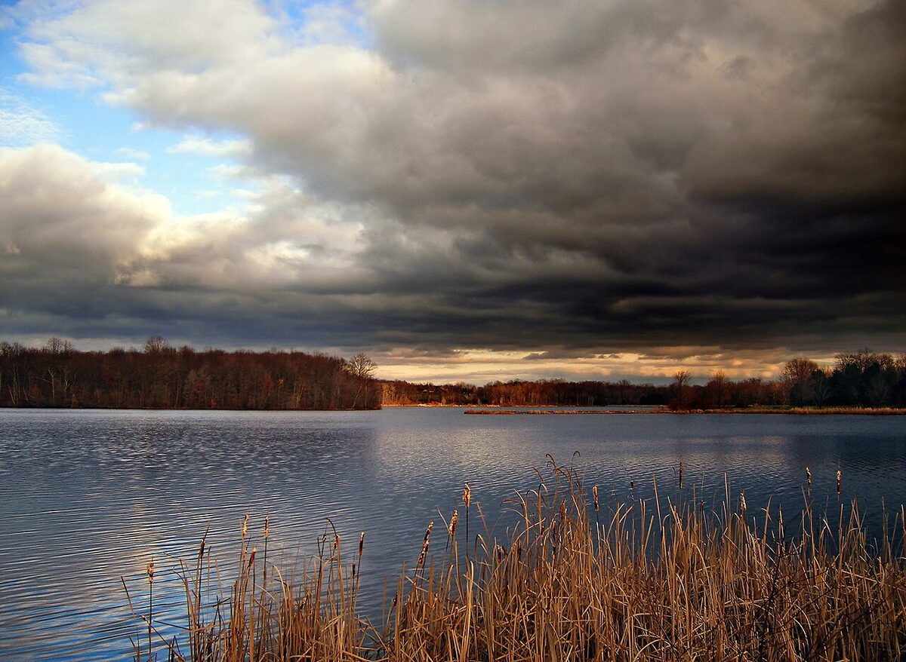

Zanim spojrzysz na barometr: hierarchia czynników
Co naprawdę rządzi aktywnością ryb
Z punktu widzenia fizjologii ryb hierarchia czynników środowiskowych jest dość jasna: na szczycie stoi temperatura wody (bo dyktuje tempo metabolizmu zwierzęcia zmiennocieplnego), zaraz za nią zawartość tlenu i dostępność pokarmu, dalej światło (rytm dobowy żerowania, skuteczność polowania wzrokowców), a dopiero na końcu czynniki pośrednie, jak wiatr czy opady, które działają głównie poprzez zmianę tych pierwszych. Ciśnienie atmosferyczne i fazy księżyca — pogodowi celebryci forów wędkarskich — w świetle wiedzy biologicznej mają wpływ co najwyżej pośredni i słabo udokumentowany. Warto o tej hierarchii pamiętać, zanim odwołamy wyprawę „bo barometr spada": pogoda interesuje rybę o tyle, o ile zmienia jej wodę.
Korelacja to nie przyczyna
Większość wędkarskich „praw pogodowych" powstała z obserwacji: było tak i tak, ryba brała, więc to przez to. Problem w tym, że zjawiska pogodowe występują pakietami. Spadek ciśnienia rzadko przychodzi sam — towarzyszą mu zachmurzenie, wiatr, wzrost wilgotności, zmiana temperatury i często opad. Jeśli przed burzą ryby żerowały, równie dobrze mogła zadziałać nagła szarość nieba i falowanie, co samo ciśnienie. Rzetelne badania starają się te czynniki rozdzielać i właśnie dlatego ich wnioski bywają mniej efektowne niż wędkarski folklor: zwykle okazuje się, że działa światło, tlen i temperatura, a reszta jest tłem. W tym poradniku przy każdym czynniku wprost zaznaczamy, do której kategorii należy.
Ciśnienie atmosferyczne — najbardziej przereklamowany czynnik
Fizyka: dlaczego samo ciśnienie znaczy dla ryby niewiele
Tu warto sięgnąć po liczby, bo są wymowne. Typowe wahania ciśnienia atmosferycznego w Polsce to kilka, wyjątkowo kilkanaście hektopaskali na dobę. Tymczasem ciśnienie hydrostatyczne rośnie o około 100 hPa na każdy metr głębokości — ryba przemieszczająca się o pół metra w górę lub w dół doświadcza zmiany większej niż najgwałtowniejszy front w prognozie. Ryby z pęcherzem pławnym (a to praktycznie wszystkie nasze gatunki łowne) na bieżąco kompensują takie zmiany, regulując ilość gazu w pęcherzu, bo robią to nieustannie przy każdej zmianie głębokości. Twierdzenie, że ryba słodkowodna „czuje w pęcherzu" spadek ciśnienia o 5 hPa i przestaje przez to żerować, nie ma przekonującego oparcia w fizjologii — to klasyczny przykład wiedzy anegdotycznej. Badania nad wpływem samego ciśnienia barometrycznego na aktywność ryb słodkowodnych dają wyniki niejednoznaczne i słabe.
Stabilność ciśnienia kontra jego wartość bezwzględna
Jeśli już patrzeć na barometr, to sensowniej obserwować trend niż liczbę. Sama wartość — 995 czy 1025 hPa — nie mówi o braniach praktycznie nic, bo jak pokazaliśmy wyżej, ryba kompensuje ją ruchem o kilkanaście centymetrów w pionie. Natomiast stabilne ciśnienie przez kilka dni jest dobrym wskaźnikiem pośrednim: oznacza ustabilizowaną pogodę, a więc ustabilizowaną temperaturę wody, światło i zachowanie pokarmu — warunki, w których ryby wypracowują regularny rytm żerowania, a wędkarz może go rozszyfrować. Gwałtowne skoki ciśnienia to z kolei sygnatura przechodzących frontów, które realnie zmieniają oświetlenie, wiatr i temperaturę. Innymi słowy: barometr bywa użytecznym streszczeniem pogody, ale to nie on jest przyczyną brań — jest tylko termometrem zmian, które działają innymi kanałami.
Fronty atmosferyczne: przed i po
Klasyczna obserwacja wędkarska głosi, że przed nadejściem frontu (zwłaszcza chłodnego, burzowego) ryby żerują intensywnie, a po jego przejściu następuje kilkudniowy zastój. Ta prawidłowość ma częściowe, racjonalne wytłumaczenie bez odwoływania się do ciśnienia: przed frontem zwykle gęstnieje zachmurzenie (mniej światła ośmiela drapieżniki), wzmaga się wiatr (falowanie, mieszanie wody, nawiew pokarmu), a parne, ciepłe powietrze sprzyja wylotom owadów nad wodą. Po przejściu frontu chłodnego przychodzi natomiast realna, mierzalna zmiana: spadek temperatury (z czasem także wody), przejrzyste niebo i ostre światło, często silny północny wiatr — i to te czynniki, a nie „wysokie ciśnienie", tłumaczą słabsze brania. Wniosek praktyczny pozostaje podobny jak w tradycji: warto łowić na kilkanaście godzin przed załamaniem pogody i ostrożnie planować pierwszy słoneczny dzień po chłodnym froncie — ale rozumiejąc mechanizm, łatwiej przewidzieć wyjątki (np. po letnim froncie ochłodzenie przegrzanej wody potrafi brania poprawić).
Temperatura wody — czynnik numer jeden, dobrze udokumentowany
Ektotermia: metabolizm ryby ustawia woda
To najtwardszy biologicznie fragment całego tematu. Ryby są ektotermami — temperatura ich ciała, a więc tempo przemiany materii, trawienia i zapotrzebowania na pokarm, jest narzucona przez wodę. Zależność jest silna: w przybliżeniu spadek temperatury o 10 °C potrafi kilkukrotnie spowolnić procesy metaboliczne. Praktycznie oznacza to, że ta sama ryba w wodzie o 6 °C trawi posiłek wielokrotnie dłużej niż w wodzie o 18 °C i po prostu rzadziej musi jeść. Stąd żelazne reguły zimowe: mniejsze przynęty, wolniejsza prezentacja, dłuższe oczekiwanie na branie — nie dlatego, że ryba „nie ma humoru", tylko dlatego, że fizjologicznie potrzebuje ułamka letniej dawki pokarmu. To wiedza podręcznikowa, potwierdzona w hodowli i badaniach, nie anegdota.
Optima termiczne gatunków
Każdy gatunek ma zakres temperatur, w którym żeruje najintensywniej, oraz granice, poza którymi ogranicza aktywność. Orientacyjnie dla naszych wód: pstrąg potokowy czuje się najlepiej w wodzie ok. 8–16 °C, a powyżej 19–20 °C wchodzi w stres termiczny (woda traci tlen, a jego zapotrzebowanie rośnie); szczupak i okoń preferują ok. 12–20 °C; sandacz ok. 14–22 °C; karp, lin i sum to gatunki ciepłolubne z optimum ok. 20–26 °C, niemal nieaktywne poniżej 8–10 °C; płoć i leszcz są plastyczne, ale i one zwalniają wyraźnie w zimnej wodzie. Te liczby tłumaczą cały kalendarz wędkarski: dlaczego jesień należy do szczupaka, a lipcowa noc do suma. Wartości traktuj jako przedziały orientacyjne — populacje lokalne bywają zaadaptowane nieco inaczej — ale sam mechanizm jest solidnie udokumentowany w literaturze ichtiologicznej.
Tlen — cichy wspólnik temperatury
Temperatura działa na brania także drugim, dobrze zbadanym kanałem: rozpuszczalność tlenu w wodzie maleje wraz z jej ogrzewaniem, podczas gdy zapotrzebowanie ryb na tlen rośnie. W upały te nożyce się rozwierają i ryby muszą wybierać miejsca, gdzie tlenu jest najwięcej: nurt, strefy falowania, dopływy, warstwę tuż nad termokliną w jeziorach. Dlatego letni wiatr i deszcz potrafią „włączyć" brania — nie przez magię ciśnienia, lecz przez fizyczne natlenienie i ochłodzenie wody. Z tego samego powodu parna, bezwietrzna noc po upalnym dniu bywa nad żyznym jeziorem martwa: glony nocą tlen zużywają, a nie produkują, i nad ranem jego deficyt jest największy. To kolejny obszar, gdzie biologia daje jednoznaczne odpowiedzi.
Wiatr — czynnik mechaniczny o realnym działaniu
Falowanie, światło i tlen
Wiatr działa na łowisko kilkoma fizycznymi, łatwymi do zaobserwowania mechanizmami. Po pierwsze, falowanie łamie i rozprasza światło wnikające w wodę oraz mąci płycizny — ryby, zwłaszcza drapieżniki polujące z zasadzki, stają się śmielsze i podchodzą płycej, a wędkarz i jego zestaw są gorzej widoczni. Po drugie, fala natlenia powierzchniową warstwę wody, co w lecie ma znaczenie wprost decydujące. Po trzecie, dłuższy silny wiatr uruchamia w jeziorach prądy i podpiętrza wodę przy brzegu nawietrznym, mieszając warstwy i przemieszczając strefy pokarmowe. Wszystkie te mechanizmy są obserwowalne i fizycznie oczywiste; ich wędkarska konsekwencja — „łów na brzegu, w który wieje" — należy do najlepiej ugruntowanych praktycznych reguł, choć oczywiście komfort łowienia na nawietrznym brzegu bywa dyskusyjny.
Nawiew pokarmu i łańcuch troficzny
Brzeg nawietrzny dostaje nie tylko falę, ale i pokarm: wiatr spycha ku niemu owady strącone z powierzchni, plankton i wszelką dryfującą materię organiczną. Za planktonem ciągnie drobnica — uklejka, młoda płoć — a za drobnicą okoń, szczupak i sandacz. To prosty, mechaniczny łańcuch przyczynowy, który tłumaczy, dlaczego po dwóch–trzech dniach stałego wiatru z jednego kierunku nawietrzna strona jeziora potrafi być wyraźnie żywsza od zacisznej. W rzece odpowiednikiem jest przybór: przybywająca woda wymywa z brzegów bezkręgowce i uruchamia żerowanie. Ta część wiedzy o wietrze jest dobrze osadzona w ekologii wód — to nie przesąd, lecz logistyka pokarmu.
Kierunek wiatru: ile prawdy w „wschodnim, najgorszym"
Porzekadło „wiatr wschodni — łowienie żadne" to z kolei przykład reguły pośrednio prawdziwej, ale błędnie tłumaczonej. Sam kompasowy kierunek wiatru nie ma dla ryby znaczenia — znaczenie ma to, co dany kierunek zwykle przynosi w naszej szerokości geograficznej. Wiatry wschodnie i północno-wschodnie towarzyszą u nas często wyżom z chłodną, suchą masą powietrza: jasne niebo, ostre światło, zimne noce, wiosną spadek temperatury wody — i to te czynniki psują brania, nie „wschodniość" wiatru. Latem długotrwały wschodni wiatr przy upale bywa wręcz neutralny lub korzystny. Wniosek: zamiast kierunku wiatru czytaj masę powietrza, którą on niesie (ciepła/zimna, wilgotna/sucha), oraz mechanikę nawiewu na konkretnym łowisku. Tradycyjna reguła to skrót myślowy — czasem trafny, ale nieprzenośny między porami roku.
Światło, zachmurzenie i opady
Światło i zachmurzenie — dobrze udokumentowany regulator
Natężenie światła to obok temperatury najlepiej potwierdzony naukowo czynnik pogodowy. Rytm dobowy żerowania ryb (szczyty o świcie i zmierzchu u większości drapieżników) jest sterowany światłem i opisany w licznych badaniach. Sandacz to przykład skrajny: jego siatkówka, wyposażona w warstwę odblaskową (tapetum lucidum), daje mu przewagę nad ofiarami właśnie przy słabym świetle — dlatego żeruje o zmierzchu, nocą, w mętnej wodzie i w pochmurne, „brzydkie" dni, a unika pełnego słońca. Zachmurzenie działa jak przedłużenie zmierzchu: wyrównuje warunki świetlne i wydłuża okna żerowania wzrokowych drapieżników, ośmiela też rybę białą na płyciznach. Stąd dobrze ugruntowana praktyka: dzień pochmurny pozwala łowić płytko i przez cały dzień, dzień słoneczny przesuwa łowienie na świt, zmierzch, głębię i cień. To biologia, nie folklor.
Opady: deszcz, burza, mżawka
Deszcz działa kilkoma realnymi kanałami: zmniejsza ilość światła, zaburza powierzchnię (maskując wędkarza podobnie jak fala), natlenia wierzchnią warstwę wody, a spływ z brzegów wnosi pokarm i lekkie zmętnienie — szczególnie w rzekach, gdzie umiarkowany przybór po deszczu to klasyczny włącznik żerowania. Ciepła letnia mżawka jest przez wielu praktyków uznawana za jedną z najlepszych „pogód wędkarskich" i mechanizmy powyżej dobrze to uzasadniają. Druga strona medalu też jest fizyczna: zimny, ulewny deszcz wiosną lub jesienią potrafi szybko ochłodzić płytką wodę i brania uciąć, a gwałtowne wezbranie z gęstym zmętnieniem utrudnia polowanie wzrokowcom. Podczas burzy bezwzględnie schodź znad wody — węglowa wędka to doskonały piorunochron i żadne branie nie jest warte tego ryzyka.
Fazy księżyca — strefa anegdoty
Uczciwie: dla ryb słodkowodnych w polskich warunkach wpływ faz księżyca na brania jest słabo udokumentowany. Tabele solunarne, popularne w aplikacjach wędkarskich, wywodzą się z obserwacji wód morskich, gdzie księżyc działa realnym mechanizmem — pływami, które przemieszczają pokarm i ryby. W jeziorach i rzekach pływów praktycznie nie ma, a badania prób powiązania faz księżyca z aktywnością ryb słodkowodnych dają wyniki sprzeczne lub statystycznie nikłe. Jedyny fizycznie sensowny mechanizm śródlądowy to światło księżyca: jasna noc pełni może wydłużać nocne żerowanie wzrokowych drapieżników (i takie obserwacje, np. sumowe, bywają powtarzane), ale wystarczy zachmurzenie, by go wyłączyć. Jeśli lubisz łowić „na pełnię" — nic w tym złego, ale planowanie urlopu pod kalendarz solunarny nie ma mocnych podstaw. Zaznaczamy to wprost, bo w tej kwestii poradniki często udają pewność, której nauka nie daje.
Synteza: jak korzystać z prognozy
Praktyczna checklista przed wyprawą
Czytając prognozę, zadawaj pytania w tej kolejności. Pierwsze: co robi temperatura — czy woda się ogrzewa ku optimum mojego gatunku (dobrze), czy gwałtownie stygnie albo przegrzewa (źle)? Drugie: jakie będzie światło — zachmurzenie pozwala łowić płytko i długo, słońce każe celować w świt i zmierzch. Trzecie: wiatr — gdzie będzie brzeg nawietrzny i czy fala natleni wodę (latem duży plus). Czwarte: opady — ciepły deszcz i lekki przybór sprzyjają, zimna ulewa i gwałtowne wezbranie szkodzą. Dopiero piąte: stabilność pogody w ostatnich dniach, dla której barometr jest wygodnym streszczeniem. Zauważ, że w tej liście nie ma wartości ciśnienia ani fazy księżyca jako samodzielnych kryteriów — i to jest świadoma, uzasadniona decyzja.
Prowadź własny dziennik zamiast wierzyć tabelkom
Najlepszym „kalkulatorem brań" dla twoich łowisk będziesz ty sam. Notuj po każdej wyprawie: datę, temperaturę wody (nie tylko powietrza!), zachmurzenie, wiatr i jego kierunek, stan wody, porę brań i gatunki — wystarczy notes albo arkusz w telefonie. Po dwóch–trzech sezonach zobaczysz wzorce specyficzne dla konkretnej wody, których żadna ogólna tabela nie odda, a przy okazji sam zweryfikujesz, czy na twoim jeziorze „spadające ciśnienie" cokolwiek znaczy. Taka osobista statystyka to też najlepsza szczepionka na pogodowe mity: zaskakująco wiele „pewników" nie przeżywa konfrontacji z własnym, uczciwie prowadzonym dziennikiem.
FAQ — najczęstsze pytania
Czy ryby naprawdę czują spadek ciśnienia?
Brak przekonujących dowodów, by ryby słodkowodne reagowały na same zmiany ciśnienia atmosferycznego. Dobowe wahania barometryczne (kilka hPa) są pomijalnie małe wobec zmian ciśnienia hydrostatycznego, które ryba kompensuje pęcherzem pławnym przy każdym ruchu w pionie — pół metra głębokości to większa zmiana ciśnienia niż najgłębszy niż baryczny. Jeśli przed frontem brania się poprawiają, niemal na pewno działa zachmurzenie, wiatr i owady, a nie barometr.
Kiedy pogoda jest „idealna" na ryby?
Uniwersalnej odpowiedzi nie ma, ale dobry kompromis dla większości gatunków to: ustabilizowana od kilku dni pogoda, temperatura wody w pobliżu optimum łowionego gatunku, pełne lub częściowe zachmurzenie, lekki–umiarkowany ciepły wiatr marszczący wodę, ewentualnie ciepła mżawka. Latem dodaj świt lub zmierzch, zimą — najcieplejsze godziny południowe. Najtrudniejsze warunki to gwałtowne ochłodzenie wody i bezchmurne, ostre słońce nad płytką, przejrzystą wodą.
Czy warto łowić w deszczu?
Często tak. Ciepły, równomierny deszcz latem zmniejsza ilość światła, natlenia i lekko mąci wodę oraz maskuje wędkarza — to sprzyja zwłaszcza drapieżnikom i rybie białej na płyciznach. Unikaj natomiast zimnych ulew chłodzących płytką wodę, gwałtownych wezbrań z gęstą mętlikiem oraz — bezwzględnie — łowienia podczas burzy z wyładowaniami.
Czy aplikacje z prognozą brań mają sens?
Jako prognozy pogody — tak; jako wyrocznie brań — ostrożnie. Wskaźniki „aktywności ryb" w aplikacjach to zwykle mieszanka tabel solunarnych (słabe podstawy dla wód słodkich) i prostych reguł ciśnieniowych (jak wyżej — wątpliwych). Sensowniej wykorzystać z aplikacji surowe dane: temperaturę, zachmurzenie, wiatr i opady, a wnioski wyciągać samemu według mechanizmów opisanych w tym poradniku i własnego dziennika połowów.
Źródła i weryfikacja
Rozdziały o temperaturze, tlenie i świetle opierają się na podręcznikowej wiedzy z fizjologii i ekologii ryb (ektotermia, zależność rozpuszczalności tlenu od temperatury, sterowany światłem rytm dobowy, budowa oka sandacza) — to obszary dobrze udokumentowane w literaturze ichtiologicznej. Fragmenty o wietrze i opadach łączą prostą fizykę wody z szeroko zgodną praktyką wędkarską. Tezy o ciśnieniu atmosferycznym i fazach księżyca celowo opisano jako słabo udokumentowane lub anegdotyczne, bo taki jest stan badań — tekst nie cytuje konkretnych prac naukowych i przy podejmowaniu decyzji warto traktować go jako przewodnik po mechanizmach, a nie gwarancję wyniku. Liczbowe optima termiczne gatunków są orientacyjne i mogą różnić się lokalnie.